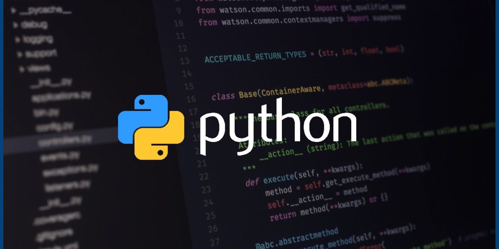

Introdução ao Python e configuração do ambiente.
Sintaxe básica, controle de fluxo e funções.
Estruturas de dados como listas, tuplas, conjuntos e dicionários.
Programação Orientada a Objetos (POO) com classes e objetos.
Tratamento de exceções e erros.
Entrada e saída de dados, incluindo manipulação de arquivos.
Uso de bibliotecas e módulos.
Manipulação de strings e trabalhos com arquivos e diretórios.
Desenvolvimento de projetos práticos.
Integração de bibliotecas e APIs externas.
Boas práticas de programação e convenções de estilo.
Versionamento de código com Git.
Depuração e testes de código.
Implantação de aplicações Python.

Requesitos
Computador: Um computador com sistema operacional Windows, macOS ou Linux.
Acesso à Internet: Conexão à internet para acessar recursos de aprendizado online.
Ambiente de Desenvolvimento: Escolha um ambiente de desenvolvimento, como Visual Studio Code ou PyCharm,
ou simplesmente use um editor de texto.
Instalação do Python: Baixe e instale a versão oficial do Python em python.org.
Motivação e Interesse: Ter interesse em programação e resolução de problemas.
Recursos de Aprendizado: Aproveite tutoriais, cursos online, documentação e livros sobre Python.
Tempo e Prática: Dedique tempo regular para escrever código e praticar.
Paciência e Persistência: Mantenha-se persistente e enfrente desafios com calma.
Projetos Pessoais: Crie pequenos projetos pessoais para aplicar seus conhecimentos.
Participação em Comunidades: Junte-se a comunidades online de programadores Python para aprender e obter
suporte.
Dependendo do nível do curso (iniciante, intermediário ou avançado) e dos objetivos do instrutor ou
programa
de estudo.